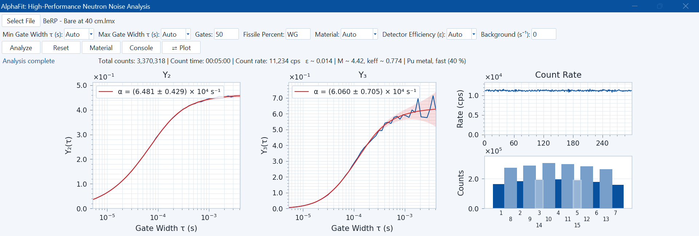
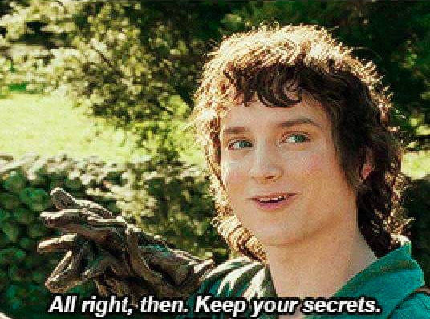
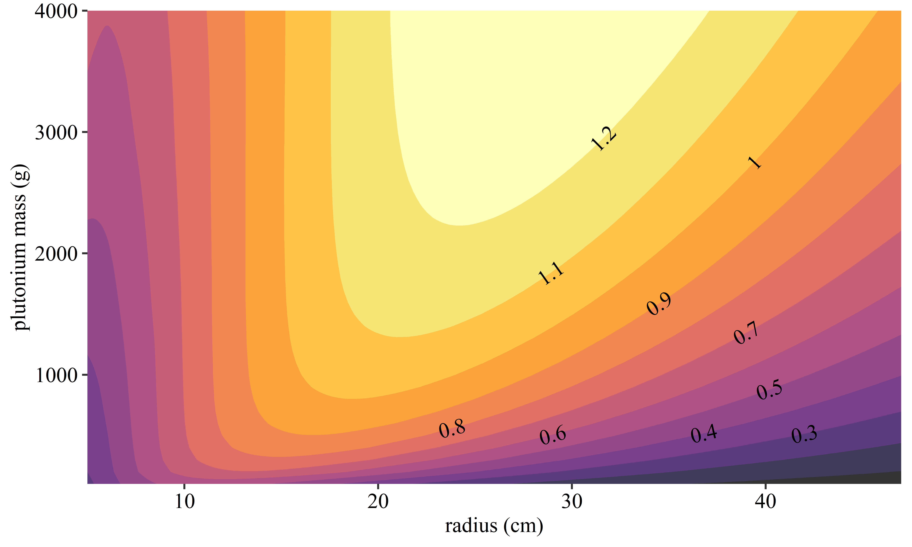
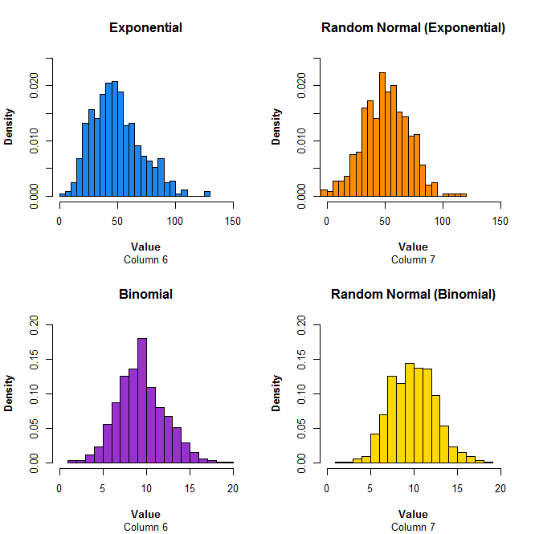
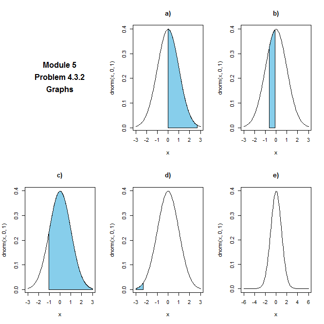
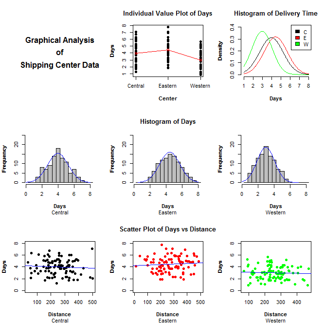
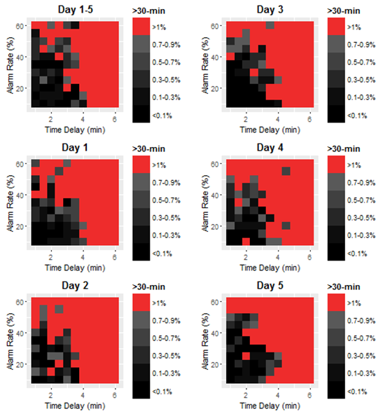
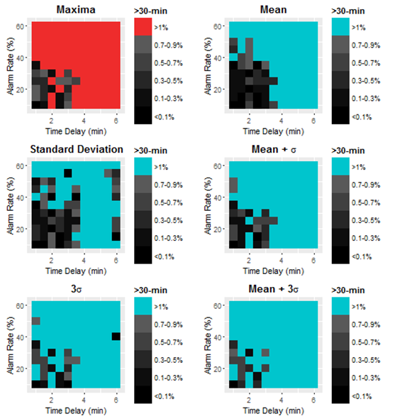
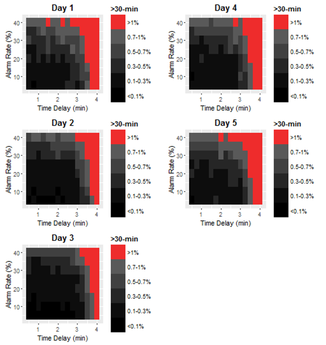
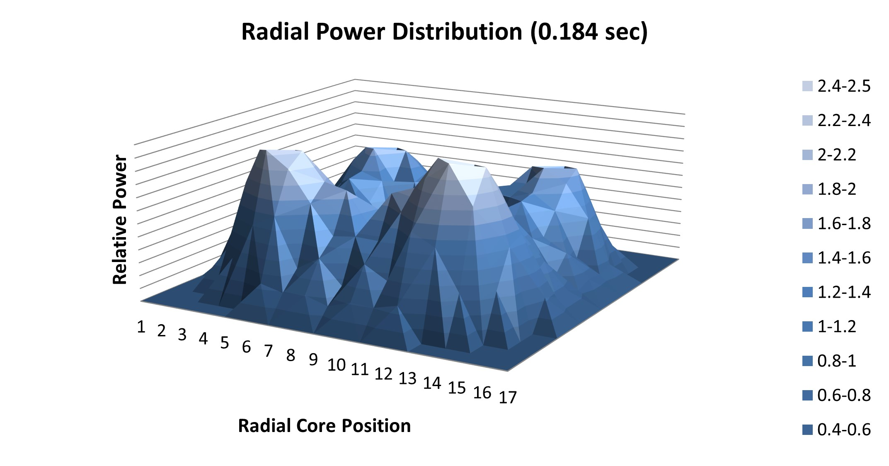

October 24, 2026
Rossi-α paper is out. I added a static α eigenvalue solver to OpenMC and compared it with Rossi-α measurements from 21 delayed-critical benchmarks and 33 subcritical configurations.
AlphaFit now fits Feynman-α doubles (Y2) and triples (Y3), Rossi-α, and the cross-power spectral density on the same record, and it estimates keff two ways: a delayed-neutron fit to Y2 and lag-1 autocovariance, which is back in. It uses every event in the record, and it can analyze data while a measurement is still running, so I no longer have to guess how long to count.

BeRP ball, bare at 40 cm, 5-minute count.
Rossi-α paper is out. I added a static α eigenvalue solver to OpenMC and compared it with Rossi-α measurements from 21 delayed-critical benchmarks and 33 subcritical configurations.
"Now and then we had a hope that if we lived and were good, God would permit us to be pirates." -Mark Twain
I built a novel α eigenvalue solver, gravitational acceleration, and solid of revolution geometry in OpenMC in about 5 days, with some help from Claude. Ultracold neutron experiments are next!
Fixing less than 20 lines of code that take 24+ hours to run.
At Preservation Pub reading an amazing dissertation beneath a tree made of lights. #toowildfriday ☢️🤖
Whenever I run a physics code that crashes with nondescript error messages:

I recently started modeling and experimenting with polymer mixtures to optimize their radiation transport properties. Most of the test samples I make look like tiny pink cupcakes.
The following k-effective contour plot was made using a deep neural network metamodel of MCNP6.2 simulations. This plot represents 0-4 kg of α-phase plutonium, homogeneously dispersed in a sphere of water, with one inch of water reflection.

These results are very accurate (MAE = 2.5e-04) and outperform state-of-the-art spline fitting techniques by more than one order of magnitude. This graph is impossible to appreciate because it's more accurate than the width of the pixel of whatever monitor it's displayed on.
Here are some graphs from assignments I completed when I was a graduate student at JHU. They were made with R and ggplot2 and formatted to appear as they do in the book Getting Started with Minitab, a piece of software I've never used.



The following graphs were from an airport TSA body scanner project, where I used R and Arena to simulate passenger queues, alarm rates, time delays, and wait times to determine how many scanners were needed to ensure less than 1% of passengers waited 30+ minutes. The first two sets of graphs were based on only a few simulations, which is why they appear spotty. These simulations were tested using real data from the Oakland International Airport.



Even after switching luggage scanners in Terminal 2, the queue times of OAK are still the lowest in the nation for an airport of its size, geographic location, population density, and throughput.
Have you ever operated a nuclear reactor? Yes? Well, have you ever achieved 500% reactor power by ejecting a rod from a four-loop Westinghouse PWR that was modified to burn MOX fuel?

"All the speed he took, all the turns he'd taken and the corners he'd cut in Night City, and still he'd see the matrix in his sleep, bright lattices of logic unfolding across that colorless void." -William Gibson